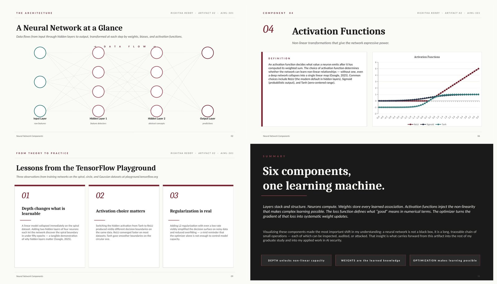

Neural Network Components & Architecture — A Visual Study for Practitioners
Back to artifacts
Neural Network Components
A visual study of the six core building blocks of a neural network — layers, neurons, weights, activation functions, loss functions, and optimization algorithms — with a cybersecurity practitioner's lens.

Title
Introduction
Neural networks underpin almost every modern advance in artificial intelligence, from large language models to image classifiers used in security tooling. Yet for many practitioners, the inside of a network remains an opaque mathematical object. This artifact opens it up — defining each major component, illustrating how data flows from input to output, and connecting the theory to two practical contexts: experimentation in the TensorFlow Playground, and the adversarial-security lens that shapes my professional work (IBM, n.d.; Google for Developers, 2025).
Description
The artifact is a 12-slide presentation in the editorial visual style of this portfolio (cream background, burgundy accent, serif headlines). After a title slide and a full architecture diagram, six dedicated slides define and explain each component:
- Layers — input, hidden, and output structure that gives the network depth and the ability to learn hierarchical abstractions.
- Neurons — the computational unit performing weighted sum + bias + activation.
- Weights — the learned parameters that store all knowledge inside a trained model.
- Activation Functions — non-linear transformations (ReLU, Sigmoid, Tanh) charted against each other.
- Loss Functions — the scalar signal driven down during training, with a loss-vs-epochs curve.
- Optimization Algorithms — gradient descent and its adaptive variants (Adam, RMSProp, AdaGrad), with a gradient-surface visualization.
Three remaining slides translate the theory: lessons learned from training networks in the TensorFlow Playground, an applied cybersecurity lens connecting each component to a specific threat surface, and a summary slide capturing the central insight.
Objective
To produce a portfolio-grade reference that satisfies all three AIML-501 learning outcomes for this artifact — defining the components, illustrating them visually, and communicating them concisely — while highlighting a different aspect of my expertise than the algorithm-types artifact in Workshop One. That different aspect is the connection between neural-network internals and the practical concerns of AI security, drawn from my professional background in penetration testing and incident response.
Process
The artifact was developed in five stages.
- Foundational study. Reviewed the assigned readings on neural networks from IBM (n.d.), Google for Developers (2025), and Sanderson's 3Blue1Brown deep-learning series (2017), and worked through the TensorFlow Playground (TensorFlow, n.d.) on the spiral, circle, and Gaussian datasets to develop intuition for layer depth, activation choice, and regularization.
- Information architecture. Designed a uniform component slide schema — definition card on the left, role-in-the-network card on the right — so all six components read consistently.
- Visual design. Matched the editorial palette of this portfolio (cream background, burgundy accent, serif display type). Drew the architecture diagram as native shapes so it renders sharply at any zoom level. Charts for activation functions, loss curve, and gradient surface are also editable native PowerPoint charts rather than rasterized images.
- Applied framing. Added a cybersecurity-perspective slide mapping each core component to a specific class of attack — weight exfiltration, adversarial examples, and loss-objective poisoning — to distinguish this artifact from the earlier algorithm-types one.
- Portfolio integration. Linked the deck from the portfolio's Artifacts index, embedded a 2×2 grid of preview slides, and exposed the .pptx for direct download.
Tools and Technologies Used
- PptxGenJS — Node.js library used to programmatically generate the PowerPoint file with native shapes and charts.
- Native PowerPoint charts — for the activation functions, loss curve, and gradient surface (editable in Microsoft PowerPoint).
- TensorFlow Playground — for hands-on experimentation with layer depth, activations, and regularization.
- HTML5 & CSS3 — for the portfolio page that hosts the artifact.
- GitHub Pages — static-site hosting.
Value Proposition
Unique value. Most explainers of neural network components stop at definitions. This artifact goes further by mapping each component to a concrete operational concern — what role it plays in training, and (separately) what threat surface it creates once deployed. That second layer is the one most relevant to my professional identity as a cybersecurity practitioner moving into AI security research, and it gives the deck a defensible point of view rather than a generic recitation of textbook content.
Relevance. Neural networks are the substrate of every contemporary AI system I work with or study, including the large language models I red-team and the classifiers I audit for adversarial robustness. Having a clean, internally consistent reference for the six components — one I built myself and can present to colleagues or course peers — is more useful than any borrowed diagram, because the framing reflects the questions I actually ask in practice.
References
Google for Developers. (2025, March 5). Neural networks. Machine Learning Crash Course. https://developers.google.com/machine-learning/crash-course/neural-networks
IBM. (n.d.). What is a neural network? https://www.ibm.com/think/topics/neural-networks
Sanderson, G. [3Blue1Brown]. (2017, October 5). But what is a neural network? | Deep learning, chapter 1 [Video]. YouTube. https://www.youtube.com/watch?v=aircAruvnKk
TensorFlow. (n.d.). Neural Network Playground. https://playground.tensorflow.org/